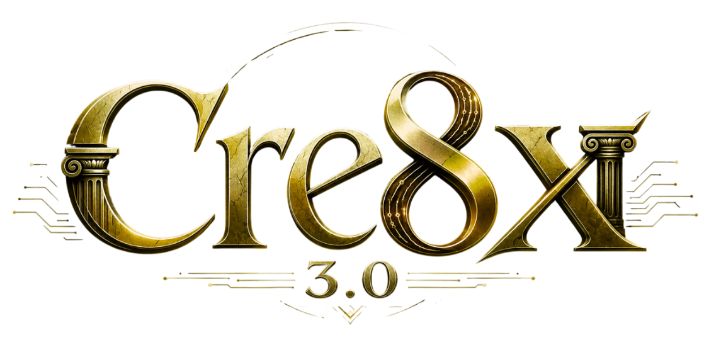
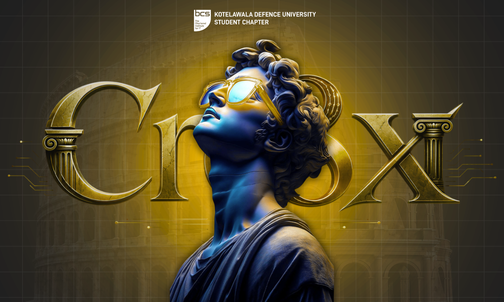
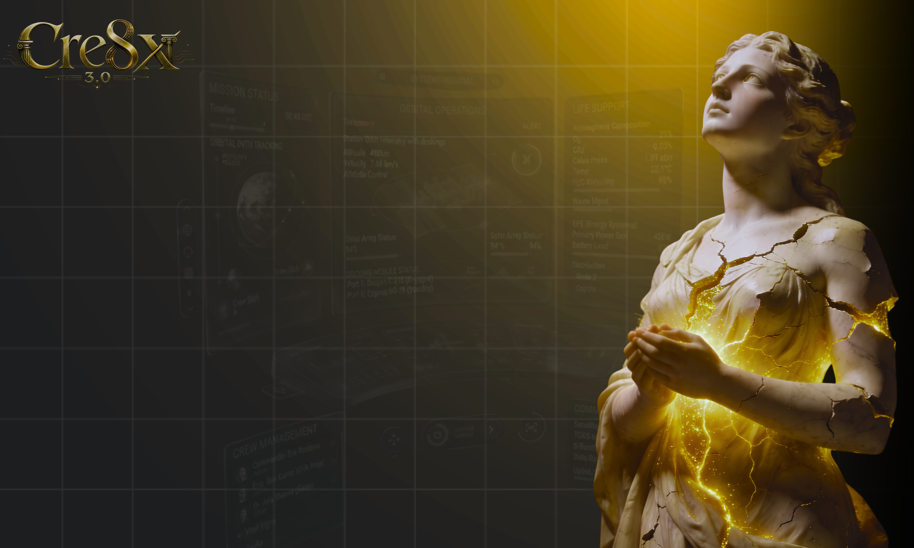
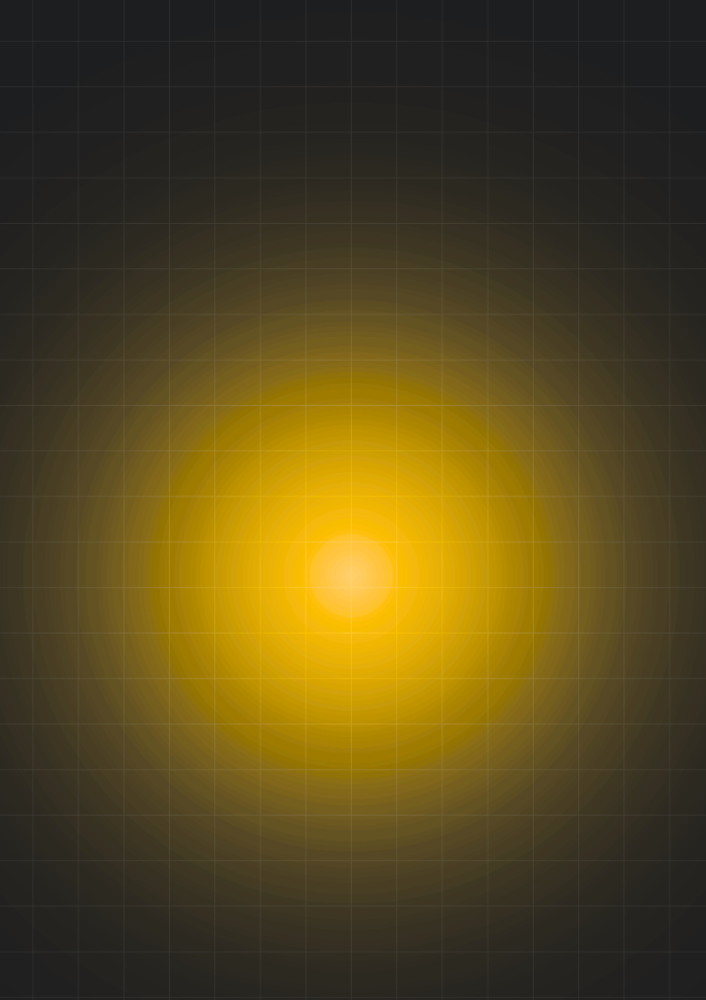
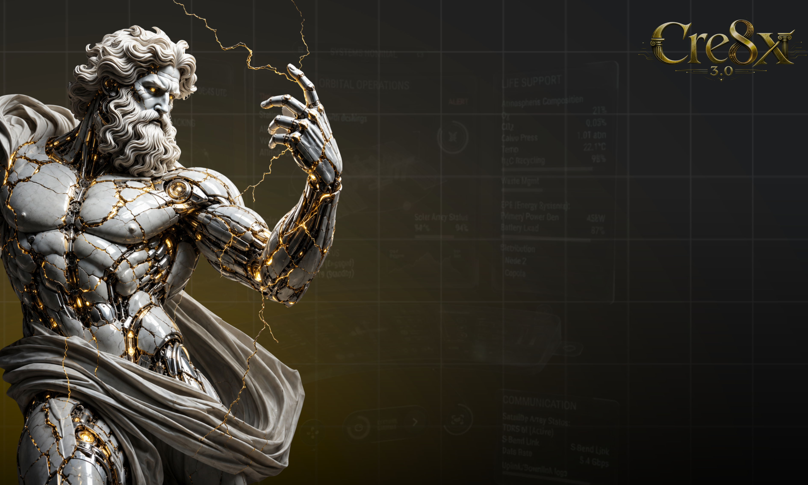
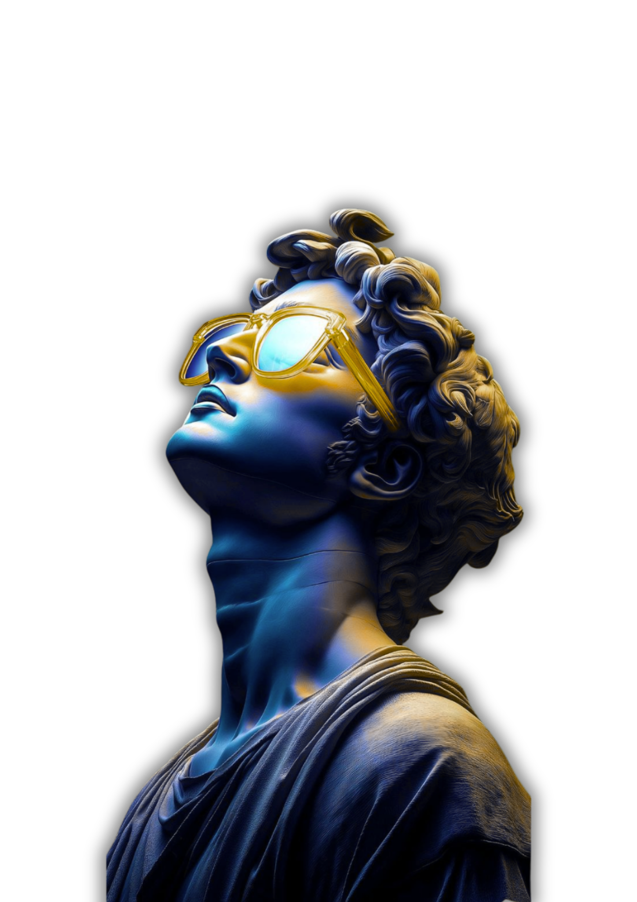

THE FIRST SPARK
Every idea begins
unfinished.
CRE8X 3.0 starts where certainty ends — with a question, a possibility, and the courage to shape what does not exist yet.

THE FIRST SPARK
CRE8X 3.0 starts where certainty ends — with a question, a possibility, and the courage to shape what does not exist yet.
PRESSURE CREATES FORM
Strong ideas are challenged, tested and rebuilt. The process does not weaken them. It gives them structure.
BUILD WITH INTENT
Skill meets imagination. Technology meets design. Thought becomes a prototype — and the prototype starts to move.
ENERGY IN MOTION
CRE8X is built for people who cross boundaries, combine disciplines and turn collaboration into something larger than any one idea.
THE NEXT CHAPTER
This is not a place to watch the future arrive. It is a place to make it.
Continue the story ↘

THE CRE8X MINDSET
CRE8X 3.0 is a creative-tech experience centered on one belief: meaningful innovation happens when bold thinking is matched with the discipline to build.
It is about moving beyond the safe answer. Exploring unfamiliar tools. Learning through iteration. Turning ideas into experiences people can see, feel and remember.

“The future belongs to the people willing to prototype it.”

THE FORGE
Inside every polished surface is circuitry, pressure and intent. CRE8X cracks the marble — so the gold can move.
THE EXPERIENCE
CRE8X 3.0 is designed as a progression — from curiosity to clarity, from collaboration to a confident final expression.
See beyond the obvious. Reframe the problem, explore the unexpected and find the idea worth pursuing.
Turn concepts into something real. Prototype, experiment and let the work reveal what the idea still needs.
Give the idea a voice. Shape the story, communicate its value and make the experience impossible to ignore.
Use feedback as fuel. Refine what works, challenge what does not, and leave with a stronger way of thinking.
HUMAN × MACHINE
Scroll to watch the marble hold its form while the circuitry wakes. Creation lives in the seam between heritage and invention.

WHY CRE8X?
CRE8X 3.0 is about closing that distance. It gives creators a reason to begin, a process that pushes them forward, and a moment to show what their thinking can become.
THE JOURNEY
The exact schedule can change. The creative arc does not: discover the challenge, develop the idea, refine the work and reveal it with confidence.
Understand the challenge. Find the tension. Identify the opportunity others might miss.
01Explore directions, combine perspectives and build the strongest version of the idea.
02Test assumptions, improve the experience and sharpen the story behind the solution.
03Bring the work into the room. Present it clearly, proudly and with purpose.
04READY WHEN YOU ARE
Event dates, venue information and participation details can be added here as soon as they are confirmed.